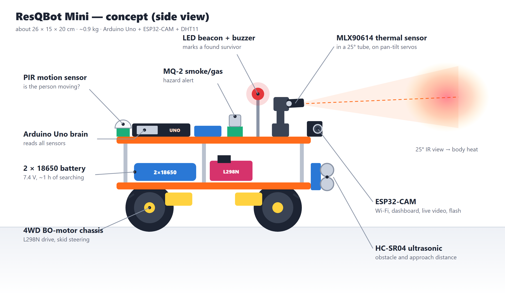
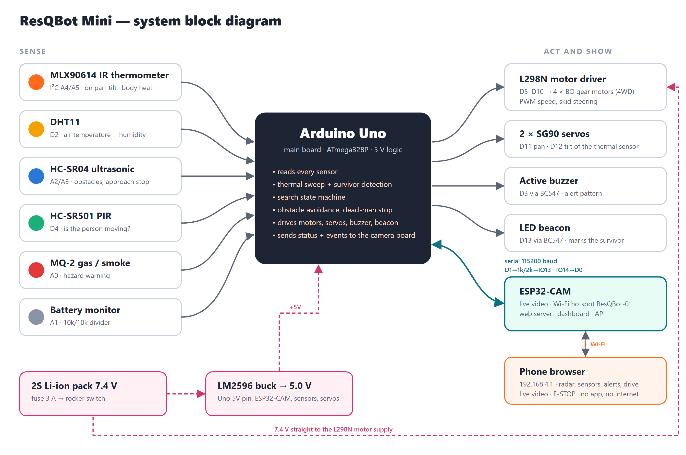
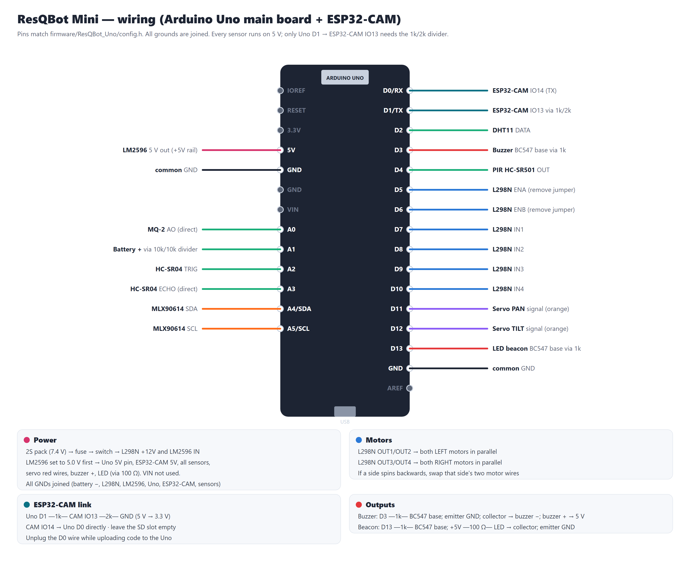
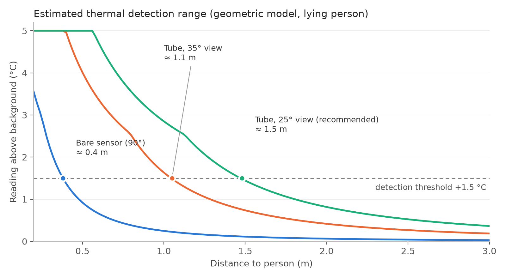
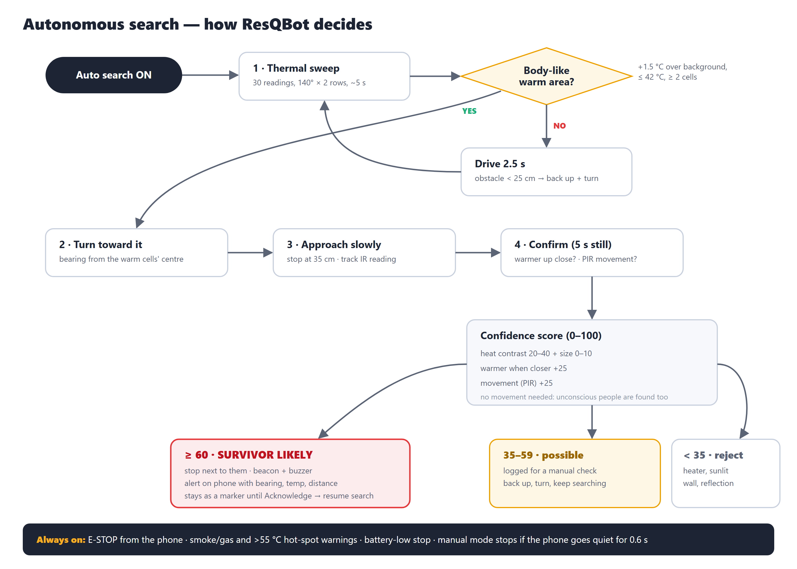

After an earthquake, building collapse, fire or flood, the first hours decide who survives. Rescue teams must search dark, smoke-filled and unstable spaces where every step is a risk to their own lives, and the tools that see body heat — thermal cameras, professional rescue robots, thermal drones — cost from tens of thousands to several lakh rupees.
ResQBot Mini is a palm-sized, four-wheel rover built entirely from common hobby parts: about ₹3,589 of new parts if you already own an Arduino Uno and an ESP32-CAM (₹4,684 if everything is bought new). A single infrared thermometer (MLX90614) mounted on two hobby servos sweeps the scene in a 2 × 15 grid, turning a ₹759 sensor into a 30-pixel thermal scanner. The Arduino Uno looks for a body-temperature heat signature, turns toward it, creeps closer, and confirms it with three more clues: the reading rises as it approaches, the warm area has the size of a person, and a PIR sensor checks for movement. A DHT11 adds the air temperature and humidity at the scene. The result is a 0–100 survivor confidence score that finds unconscious people too, while rejecting heaters, sunlit walls and reflections.
When a survivor is likely, the robot stops beside them, flashes a beacon and sounds a buzzer, and alerts the rescue team's phone with the temperature, direction, distance and live video from an ESP32-CAM. It also warns of smoke or gas and of fire hot spots. Everything runs over the robot's own Wi-Fi hotspot — no internet, no app, any phone browser — so it works where mobile networks are down. The design is open, reproducible and ready to be built by any school, college, NGO or civil-defence volunteer team.
India is one of the most disaster-prone countries in the world: earthquakes, monsoon floods, landslides, cyclones, urban fires and the frequent collapse of old or illegally built structures. When buildings fall, people are trapped in voids under the rubble, often injured, in the dark and unable to call out.
| Approach | Strengths | Limits for local first responders | Typical cost* |
|---|---|---|---|
| Manual search, calling out, listening | No equipment | Slow, dangerous, misses unconscious people | — |
| Search-and-rescue dogs | Excellent at finding people | Years of training, few teams, tire quickly | High |
| Handheld thermal camera | Clear heat image | Rescuer must still go in; needs line of sight | ₹25,000+ |
| Thermal drone | Covers large open areas fast | Cannot enter rubble voids or rooms; needs a trained pilot | ₹1 lakh+ |
| Acoustic / seismic life detectors | Hear tapping and breathing | Need silence on site; specialist equipment | Lakhs |
| Professional rescue robots | Rugged, many sensors | Very expensive; only national teams have them | Lakhs+ |
| ResQBot Mini (this project) | Thermal + motion + gas + air + video, autonomous, offline | Short range, small obstacles only (see section 17) | ₹2,965 |
*Approximate Indian market prices, for comparison only.
Servo-swept IR thermometer acts as a 2 × 15 thermal camera; sees body heat in darkness and dust.
Movement is a bonus clue, not a requirement — heat, size and "warmer when closer" are enough for an alert.
ESP32-CAM streams video to the dashboard, takes evidence photos and lights dark voids.
MQ-2 smoke/gas alarm and > 55 °C hot-spot (possible fire) warning before people go in.
Self-guided search with obstacle avoidance, or hold-to-drive control from the phone.
The robot is its own Wi-Fi hotspot; any phone or laptop browser is the control station.
Stays beside a found person with a flashing light and buzzer pattern until acknowledged.
E-STOP, dead-man stop if the phone goes quiet, slow approach, low-battery stop.

Every part is a standard hobby module sold in local electronics markets and by online stores such as Robu.in, Robocraze or Amazon.in. Prices are typical Indian retail prices in 2026; they vary by shop.
| # | Component | Qty | Role in the robot | ₹ |
|---|---|---|---|---|
| 1 | Arduino Uno R3 (CH340 compatible) | 1 | Main board: reads every sensor, runs the search, drives motors and servos | 249 |
| 2 | ESP32-CAM board with OV2640 2 MP camera | 1 | Live video, Wi-Fi hotspot and the dashboard; gets all data from the Uno | 846 |
| 3 | ESP32-CAM-MB USB programmer board | 1 | Uploads code to the ESP32-CAM (skip if your camera listing includes it) | 119 |
| 4 | MLX90614 IR temperature sensor (GY-906) | 1 | Body-heat detection: the 'thermal camera' on the pan-tilt head | 759 |
| 5 | HC-SR04 ultrasonic distance sensor | 1 | Obstacle avoidance and stopping 35 cm from a person | 79 |
| 6 | HC-SR501 PIR motion sensor | 1 | Detects whether the survivor is moving | 69 |
| 7 | DHT11 temperature and humidity module | 1 | Air temperature and humidity next to the IR readings | 59 |
| 8 | MQ-2 smoke / gas sensor module (Winsen) | 1 | Smoke and LPG warning for rescuers | 129 |
| 9 | 4WD robot car chassis kit (2 plates, 4 BO motors, 4 wheels, screws) | 1 | Robot body and wheels | 609 |
| 10 | L298N dual motor driver module | 1 | Drives the left and right motor pairs | 129 |
| 11 | TowerPro SG90 micro servo | 2 | Pan and tilt of the thermal sensor | 178 |
| 12 | 2-axis pan-tilt bracket for SG90 | 1 | Holds the thermal sensor on the two servos | 89 |
| 13 | 7.4 V 2500 mAh 2S Li-ion pack, protected, with DC jack | 1 | Powers everything; built-in protection board | 579 |
| 14 | 5.5 mm DC jack, male, with wire | 1 | Connects the battery pack to the robot | 29 |
| 15 | LM2596 buck converter (step-down) | 1 | Clean 5 V for the ESP32, camera, servos and sensors | 98 |
| 16 | Mini rocker switch, 2-pin (pack of 2) | 1 | Main power ON/OFF | 30 |
| 17 | 5 V active buzzer | 1 | Alert sound and call-out beep | 18 |
| 18 | BC547 NPN transistor (Q1, Q2) | 2 | Switch the buzzer and the beacon LED from Uno pins | 6 |
| 19 | Bright 5 mm Piranha LED | 1 | Beacon light that marks the survivor | 29 |
| 20 | Resistors ¼ W: 1 kΩ ×3, 2 kΩ, 10 kΩ ×3, 100 Ω (R1–R8) | 1 | Serial-link and battery dividers, transistor bases, LED current, DHT pull-up | 10 |
| 21 | Capacitors, diode, fuse: 470 µF + 220 µF 10 V, 4 × 100 nF, 1N4148, 3 A fuse + inline holder | 1 | C1–C6, D1, F1 from the schematic: power filtering and protection | 40 |
| 22 | Jumper wires, male–female, 40 pcs, 30 cm | 1 | Module connections | 69 |
| 23 | Jumper wires, female–female, 40 pcs, 20 cm | 1 | Module-to-ESP32 connections | 49 |
| 24 | Zero PCB (general-purpose board) | 1 | Base for the ESP32, dividers and transistor | 91 |
| 25 | Female berg strip 1×40 (pack of 5) | 1 | Plug-in sockets so the ESP32 is removable | 98 |
| 26 | M3 × 10 mm bolt and nut set (25 pcs) | 1 | Mounting the modules on the chassis | 78 |
| 27 | Black heat-shrink tube kit (127 pcs) | 1 | Insulating joints; a 10 mm piece is the IR viewing tube | 146 |
| Total — all 27 items bought new (online prices) | ₹4,684 | |||
Not included: a 2S charger (about ₹549 once) for the battery pack and basic tools (soldering iron, screwdriver), which most labs already have.

The MLX90614 measures the average temperature of everything inside its field of view. The pan servo steps it from 20° to 160° in 10° steps (15 columns) and the tilt servo looks at two heights — down at the floor and straight ahead — giving a 2 × 15 heat map every ~5 seconds. The path is a serpentine (right-to-left, then left-to-right), so the servo never makes a long jump, and each cell is read twice and averaged.
The common GY-906 module sees a very wide 90° cone, so a person a metre away fills only a small part of its view and barely changes the reading. A short black tube (about 10 mm inside diameter, 22 mm long) slipped over the sensor narrows the view to about 25°. Our geometric model below shows the effect for a person lying on the floor.

| Clue | Why it matters | Points |
|---|---|---|
| Heat contrast | How much warmer than the background (20 at +1.5 °C, up to 40 at +4 °C) | 20–40 |
| Size | A person covers several cells; a cup of tea or a phone does not | 0–10 |
| Warmer when closer | A real heat source fills more of the view as the robot approaches; reflections and distant warm walls do not | +25 |
| Movement (PIR) | A conscious, moving person; read only while the robot stands still | +25 |
| ≥ 60 = SURVIVOR LIKELY (alert) · 35–59 = possible (logged) · below 35 = rejected | 0–100 | |

Two programs: the Arduino Uno sketch (Servo and Wire built in, plus the Adafruit DHT sensor library) and the ESP32-CAM sketch (Arduino-ESP32 core 3.x). The Uno code is non-blocking: sensors, thermal sweep, search logic and the serial link all run in one fast loop. On the ESP32-CAM the video stream has its own server task, so live video and sensor data run at the same time.
| File | What it does |
|---|---|
| ResQBot_Uno/ResQBot_Uno.ino | Arduino Uno main code: sensors, thermal sweep, search state machine, motors, servos, alerts, serial link |
| ResQBot_Uno/config.h | Every pin, speed and threshold in one place |
| ResQBot_Uno/detection.h | Heat-blob finder and confidence score (pure C++) |
| ResQCam_Gateway/ResQCam_Gateway.ino | ESP32-CAM: Wi-Fi hotspot, web server and API, MJPEG stream, photo, flash LED, serial bridge to the Uno |
| ResQCam_Gateway/dashboard_html.h | The phone dashboard, embedded into the firmware |
| dashboard/index.html | Dashboard source (open it in a browser for demo mode) |
| sim/ | Python copy of the detection logic, 12 scenario tests, range model |
| Request | Action |
|---|---|
| GET /api/status | All telemetry as JSON: mode, state, IR and air temperature, humidity, distance, gas, battery, heat map, finding, events, link status |
| GET /api/drive?l=..&r=.. | Left/right motor speed −255…255 (manual mode, repeated every 200 ms) |
| GET /api/mode?m=manual|auto|estop | Change mode; estop stops everything |
| GET /api/scan, /api/ack, /api/beep | One thermal sweep · acknowledge alert · call-out beep |
| GET /api/log.csv | Download the event log |
| 192.168.4.1:81/stream, /capture, /led?on=1 | Live video, photo, flash light |
The dashboard is a single web page stored inside the robot. It needs no app and no internet: join the robot's Wi-Fi and open 192.168.4.1. It refreshes twice a second.
Slow crawl speed near people; stops 35 cm away; no sharp parts or high voltage; blocks forward driving below 12 cm even in manual mode; buzzer and light reassure the survivor that help is near.
Robot goes first; smoke/gas and fire hot-spot warnings before entry; live video and heat map reduce blind entries; survivor location is marked by the beacon.
E-STOP from the phone; dead-man stop if commands stop for 0.6 s; low-battery stop (6.8 V) protects the Li-ion cells; separate 5 V rail; fuse recommended on the battery lead.
Soldering iron and solder, small screwdrivers, wire stripper, multimeter, hot-glue gun, double-sided tape, a laptop with the Arduino IDE 2.x, a USB-B cable for the Uno and a micro-USB cable for the ESP32-CAM programmer board.
| Symptom | Fix |
|---|---|
| "Thermal sensor not responding" | SDA → A4, SCL → A5, VIN → 5 V; GY-906 address must be 0x5A |
| "Arduino not responding" | Check D1 → 1k → IO13, IO14 → D0 and the common GND; unplug the Uno's USB cable |
| "DHT11 not responding" | DATA on D2; a bare 4-pin sensor needs a 10 kΩ pull-up to 5 V |
| A board resets when the servos move | Servos must be on the LM2596 5 V rail; check the 470 µF capacitor |
| Distance always "clear" | ECHO divider wiring; sensor needs 5 V VCC |
| Camera shows "offline" | Reseat the camera ribbon; add 220–470 µF at the 5 V pins of the camera; keep its power wires short |
| Robot does not move in auto mode | Battery below 6.8 V stops the search: charge the cells |
Each test has a measurable pass target. The last column is filled in during trials, so judges can see real results next to the design targets.
| ID | Test | Method | Pass target | Result |
|---|---|---|---|---|
| T1 | Sensor accuracy | IR reading vs a reference thermometer on a warm water bottle | ±1 °C | |
| T2 | Detection range | Volunteer lying on the floor; increase distance in 10 cm steps until no alert | ≥ 1.0 m | |
| T3 | False alarms | 20 sweeps each: empty room, sunlit wall, laptop charger, hot cup | 0 survivor alerts | |
| T4 | Direction accuracy | Person at known angles (−60° to +60°) | ±15° | |
| T5 | Unconscious survivor | Volunteer lying perfectly still | Alert, "not moving" | |
| T6 | Obstacle avoidance | 10 runs toward walls and boxes | No collisions | |
| T7 | Dead-man stop | Turn phone Wi-Fi off while driving | Stops in < 1 s | |
| T8 | E-STOP | Press E-STOP during auto search | Stops in < 0.5 s | |
| T9 | Smoke alarm | Incense-stick smoke near the MQ-2 (outdoors) | Alarm in < 10 s | |
| T10 | Wi-Fi range | Walk away with the phone, line of sight | ≥ 20 m | |
| T11 | Video | Count frames of the ESP32-CAM stream | ≥ 10 fps at 640 × 480 | |
| T12 | Battery life | Continuous auto search from full charge | ≥ 45 min | |
| T13 | End-to-end | Volunteer hidden behind cardboard "rubble" in a 3 × 3 m arena | Alert in < 3 min |
A 3 × 3 m area with cardboard boxes as rubble, one volunteer lying in a gap, and distractors: a warm laptop charger, a cup of hot water, a sunlit wall and a phone. The room is darkened for the camera and flash-light test.
Sweeping a single IR thermometer with two hobby servos produces a 30-pixel heat map — enough to find and point to a person — at a fraction of the cost of thermal-array sensors.
A short black tube narrows the sensor's view from 90° to about 25°, roughly tripling the estimated detection range at almost no cost.
Heat contrast, size, "warmer when closer" and motion combine into one score, so the robot finds unconscious survivors while rejecting heaters, reflections and hot cups.
Instead of only reporting coordinates, ResQBot parks beside the survivor with a beacon and buzzer — rescuers simply follow the light and sound.
Its own Wi-Fi hotspot and a web page stored in the firmware mean any phone becomes the control station, even when networks are down.
Common parts, one config file, documented wiring, a tested detection algorithm and a demo mode — any school or NGO can reproduce it.
SDG 3 Good health and well-being · SDG 9 Industry, innovation and infrastructure · SDG 11 Sustainable cities and communities (disaster risk reduction) — in line with the UN Sendai Framework for Disaster Risk Reduction 2015–2030.
| Limitation today | Planned improvement |
|---|---|
| Detection range about 1–1.5 m; low resolution | Upgrade to an AMG8833 (8 × 8) or MLX90640 (32 × 24) thermal array when budget allows |
| Wheels manage small obstacles only | Tracked chassis, higher ground clearance, rubber treads |
| Cannot see through walls or deep rubble | Add a microphone for tapping/voices and a CO₂ sensor for breathing |
| Hot surroundings (close to 37 °C) reduce contrast | Use the camera and motion more; thermal-array upgrade |
| No map: turns are timed, no wheel encoders | Wheel encoders + IMU for a map of the search path and survivor positions |
| Wi-Fi range about 20–50 m | LoRa radio relay chain for long range; drop-off Wi-Fi repeaters |
| One robot at a time | Several robots sharing one dashboard (swarm search) |
| Buzzer only | DFPlayer Mini (₹150) for recorded voice messages and two-way audio |
| Not water- or dust-proof | 3D-printed enclosure, conformal coating |
| Week | Work | Deliverable |
|---|---|---|
| 1 | Buy parts, set up tools, flash test sketches | All modules tested individually |
| 2 | Chassis, power system, motor driver | Robot drives from the phone |
| 3 | Thermal head, sensors, alerts, camera | Live heat map and video on the dashboard |
| 4 | Autonomous search, detection tuning | Finds a volunteer in the test arena |
| 5 | Tests T1–T13, calibration, fixes | Filled-in results table |
| 6 | Final documentation, demo video, presentation | Competition submission |
ResQBot Mini shows that the core of thermal search-and-rescue — seeing body heat, pointing to a survivor, warning of hazards and staying with the person until help arrives — can be delivered for about ₹3,600 of new parts (an Arduino Uno, an ESP32-CAM and common modules anyone can buy). It does not replace professional teams; it gives every local first responder a robot scout that goes in first, so that rescuers spend their time where people are actually trapped and take fewer risks to get there.
| Pin | Connected to | Pin | Connected to |
|---|---|---|---|
| A0 | MQ-2 AO | D5 / D6 | L298N ENA / ENB (speed, PWM) |
| A1 | Battery divider (10k/10k) | D7 / D8 | L298N IN1 / IN2 |
| A2 / A3 | HC-SR04 TRIG / ECHO | D9 / D10 | L298N IN3 / IN4 |
| A4 / A5 | MLX90614 SDA / SCL | D11 / D12 | Servo pan / tilt signal |
| D0 / D1 | ESP32-CAM IO14 / IO13 (D1 via 1k/2k) | D3 | Buzzer (via BC547) |
| D2 | DHT11 data | D13 | LED beacon (via BC547) |
| D4 | PIR output | 5V / GND | +5V rail / common ground |
rescue-bot/ firmware/ResQBot_Uno/ main robot firmware (Arduino Uno) firmware/ResQCam_Gateway/ camera, Wi-Fi and dashboard firmware (ESP32-CAM) dashboard/ phone dashboard (open index.html in a browser for demo mode) sim/ detection logic in Python, scenario tests, range model docs/ this document, build guide, diagrams and images tools/ dashboard embedder, diagram rendering, PDF build